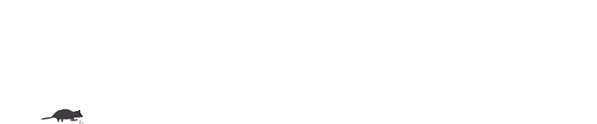
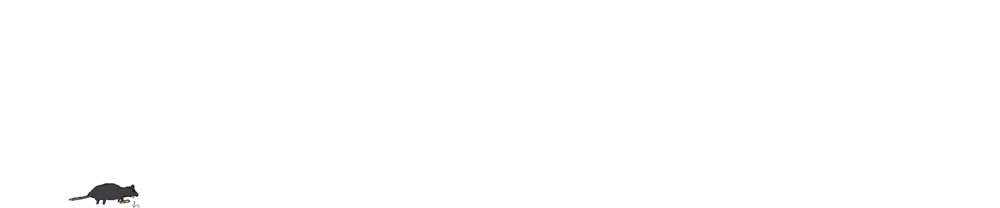
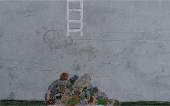
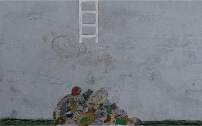

 



Autour de lui, le temps passe.
Les fleurs s'épanouissent, les feuilles poussent, se fanent, tombent.
Mais lui reste. Jour après jour.
Silencieux. Immobile.
Il sépare le haut du bas,
l'extérieur de l'intérieur.
Là-bas s'accumulent les choses
qui ne supportent pas la lumière.
Ombres issues de pensées,
éclats issus de sentiments –
ce qui n'est pas dit s'enfonce.
Là-bas, il n'y a ni printemps, ni automne.
Seulement le froid, l'obscurité et des choses
dont personne ne veut parler.
C'est ici qu'ils dérivent –
nos vices, notre honte,
les restes de ce que nous avons refoulé.
Les pensées et les émotions enfouies au plus profond de nous-mêmes, trop lourdes pour continuer à être portées à la surface.


Les pensées et les émotions enfouies au plus profond de nous-mêmes, trop lourdes pour continuer à être portées à la surface.

Peut-être que ce qui se trouve ici-bas
n'est pas des déchets, mais une partie de nous-mêmes.
Peut-être que ce que nous cachons ici-bas
est ce qui nous relie.
Peut-être faut-il les deux :
la lumière au-dessus et la profondeur en dessous.
Car c'est seulement entre les deux
que l'on voit qui nous sommes vraiment.